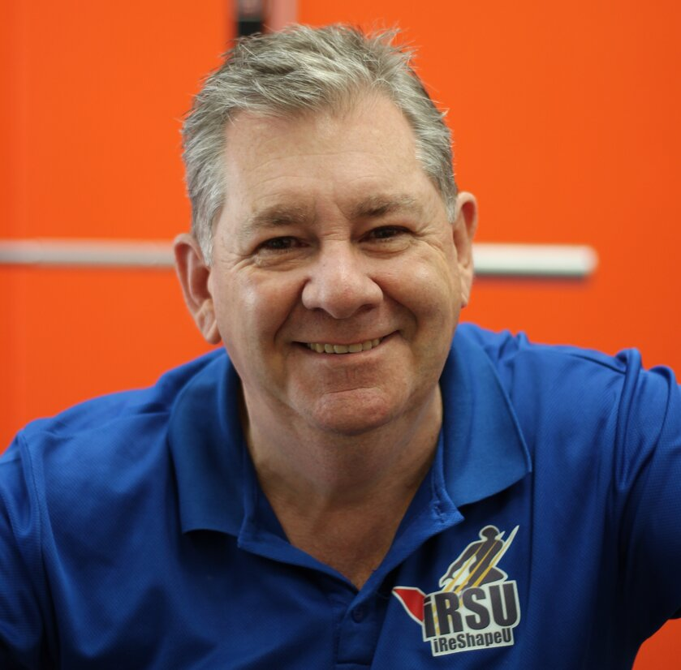

Audience
Target Audience
Our target audience is directed to small and medium companies as well as entrepreneurs who want to develop their skills in their professional field in Tijuana.
Personas:
Eric Flores
Occupation:
Software Manager
Demographics and Education:
Age:40
Education:Computer Engineering BS
Married
Two Children
Goals:
Focused on results,monitoring events in the development of its personnel and creation of company procedures.
Quote
"Our ideas can be transformed into solutions"

Jose Velez
Occupation:
Accountant
Demographics and Education:
Age:56
Education:Business Administration BS
Married
Three Children
Goals:
Simplify administrative and financial processes through the use and application of information technologies. He wants to learn about technologies that he can use at his work.
Quote
"Is there another alternative to make it more efficient?"
Scenarios
#1 Scenario
What services offer Rivers Commerce Chamber?
On the home page will show things like past interaction activities, courses given , advertising opportunities and a section with some pictures of our associates.
#2 Scenario
How can I join to Rivers Commerce Chamber?
On our "join" page you will learn all of the benefits and options to become a member of our chamber and the information you need to fill out the form to join.
#3 Scenario
How can I reach out someone from Rivers Chamber to request for more information?
A form found on our contact page will allow people to ask about anything through email and as well as find the contact info of our officers and board directors of the chamber.
#4 Scenario
Where can I find information about the most relevant events and demographic information about the city
On our discover page, are found images and news for the people in Tijuana significant like the inauguration of a new mall in the city and events that impact the common welfare.
#5 Scenario
How can I get in touch with the nearby companies in the community?
This information is available in our directory page where is found the address where the company is located, cellphone in the city.